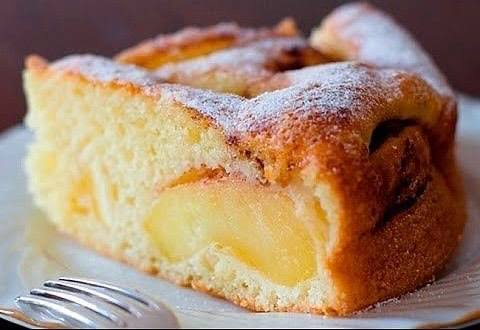

Яблучний пиріг (Шарлотка)

Шарлотка — це простий та дуже смачний десерт. Нижче наведено класичний рецепт приготування.
Інгредієнти:
- Яблука — 4 шт.
- Яйця курячі — 4 шт.
- Цукор — 1 склянка
- Борошно — 1 склянка
- Розпушувач — 1/2 ч. ложки
Покроковий рецепт:
- Збийте яйця з цукром до утворення пишної піни.
- Повільно додайте борошно та розпушувач, акуратно перемішуючи.
- Наріжте яблука дольками.
- Викладіть яблука у форму для випікання та залийте тістом.
- Випікайте при температурі 180°C протягом 35-40 хвилин.